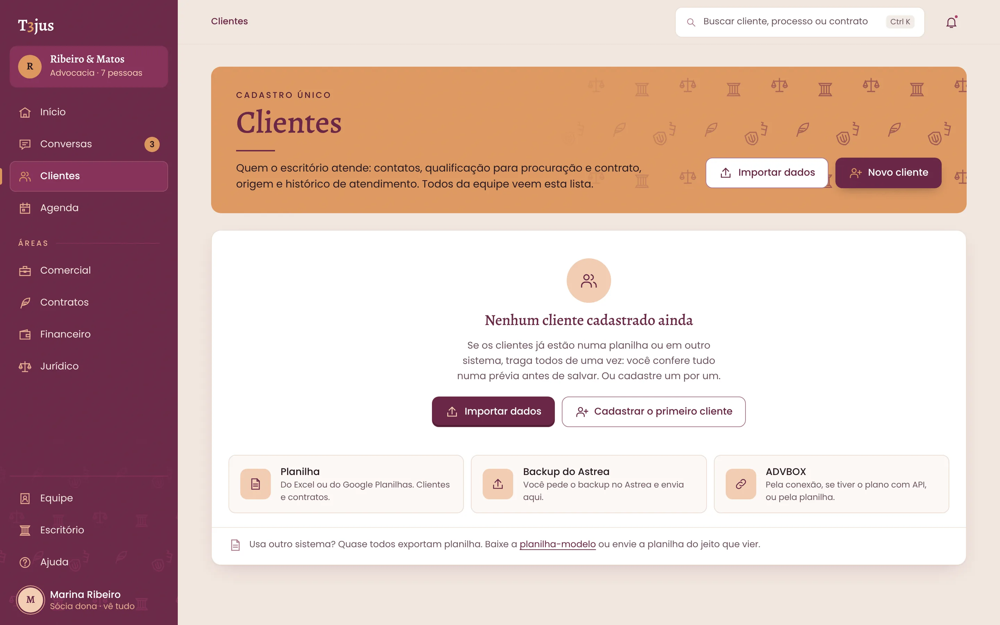

Clientes de um escritório novo
A lista vazia oferece importar (principal) ou cadastrar um por um, com as três origens logo embaixo: planilha, backup do Astrea e ADVBOX.
Abrir: sistemas.html?estado=clientes-vazio (estreite a janela para ver o celular)